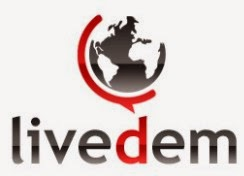

Site en construction
Bienvenue sur le site livedem.org
La démocratie est l’affaire de tous.
Livedem.org est un outil collaboratif ouvert à tous et pour tous.
Tout citoyen peut proposer, débattre, soutenir librement des idées
concernant l’organisation et la structuration de notre société.
Avec Livedem.org, l’expression des citoyens est accessible, rendue publique et relayée aux élus et décideurs.
Rappelons aux politiques qu’ils sont les représentants de nos idées.
Les principes de LiveDem.org :
• La mise en œuvre de la démocratie à travers l’organisation du débat public
• La liberté de faire des propositions concrètes sur tous les sujets de société, et de réagir aux propositions des autres citoyens
• Le débat dans le respect des droits de l’homme et des libertés fondamentales
• La garantie d’un système neutre et transparent, qui assure la protection des données personnelles
• Porter et relayer en toute neutralité les idées des citoyens
Nos Objectifs:
•Que la chose publique et ses enjeux redeviennent l’affaire de tous.
•Redynamiser la vie publique, permettre une réappropriation de la vie de la cité par les citoyens. Le sursaut de la population sera à l’origine du sursaut de l’action politique
•Permettre à l’ensemble des composantes qui structurent la société de s’exprimer et d’élaborer des propositions. Assurer la représentativité de la société dans sa réalité moderne
•Permettre à l’intelligence, la créativité et le bons sens de tous de s’exprimer
•Rendre sa place au citoyen : au centre du débat public et au cœur des décisions qui régissent notre société.
Qui sommes-nous ?
Livedem est une association à but non lucratif et non partisan.
Ses membres fondateurs ainsi que l’ensemble des membres constituant
le bureau sont neutres et impartiaux. Ils ne sont ni animés par des
objectifs partisans, ni ne motivent leurs décisions ou actions au nom
de l’association du fait d’ambitions ou intérêts
personnels.
L’association est indépendante. Sa liberté et son autonomie
garantissent sa légitimité.
En attenant la mise en ligne du site, consulter notre blog http://livedem.blogspot.fr/ , la page facebook de livedem